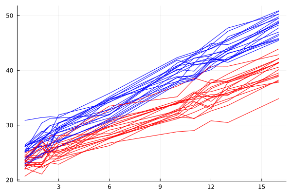
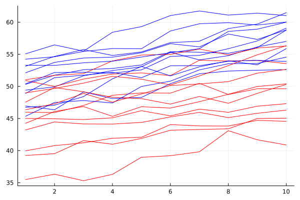

Example 1 - Continuous and categorical predictors
using Metida, CSV, DataFrames, CategoricalArrays, MixedModels;
rds = CSV.File(joinpath(dirname(pathof(Metida)), "..", "test", "csv", "1fptime.csv"); types = [String, String, Float64, Float64]) |> DataFrame
Metida result:
lmm = LMM(@formula(response ~1 + factor*time), rds;
random = VarEffect(@covstr(1 + time|subject&factor), CSH),
)
fit!(lmm)Linear Mixed Model: response ~ 1 + factor + time + factor & time
Random 1:
Model: :(1 + time)|:(subject & factor)
Type: CSH (3), Subjects: 40
Repeated:
Residual only
Blocks: 40, Maximum block size: 10
Status: converged (No Errors)
-2 logREML: 1300.18 BIC: 1324.12
Fixed-effects parameters:
──────────────────────────────────────────────────────────
Coef. Std. Error z Pr(>|z|)
──────────────────────────────────────────────────────────
(Intercept) 22.1331 0.304339 72.73 <1e-99
factor: 1.0 2.00049 0.430401 4.65 <1e-05
time 1.11853 0.0264038 42.36 <1e-99
factor: 1.0 & time 0.404971 0.0373406 10.85 <1e-26
──────────────────────────────────────────────────────────
Variance components:
θ vector: [1.2401, 0.101122, -0.0427208, 0.985061]
Random 1 σ² (Intercept) var 1.53785
Random 1 σ² time var 0.0102257
Random 1 ρ rho -0.0427208
Residual σ² var 0.970345
MixedModels result:
fm = @formula(response ~ 1 + factor*time + (1 + time|subject&factor))
mm = fit(MixedModel, fm, rds, REML=true)
Minimizing 2 Time: 0:00:00 ( 0.18 s/it)
objective: 1426.9231858044589
Minimizing 68 Time: 0:00:00 ( 5.85 ms/it)
Linear mixed model fit by REML
response ~ 1 + factor + time + factor & time + (1 + time | subject & factor)
REML criterion at convergence: 1300.180759818896
Variance components:
Column Variance Std.Dev. Corr.
subject & factor (Intercept) 1.537850 1.240101
time 0.010226 0.101122 -0.04
Residual 0.970345 0.985061
Number of obs: 400; levels of grouping factors: 40
Fixed-effects parameters:
──────────────────────────────────────────────────────────
Coef. Std. Error z Pr(>|z|)
──────────────────────────────────────────────────────────
(Intercept) 22.1331 0.304339 72.73 <1e-99
factor: 1.0 2.00049 0.4304 4.65 <1e-05
time 1.11853 0.0264037 42.36 <1e-99
factor: 1.0 & time 0.404971 0.0373405 10.85 <1e-26
──────────────────────────────────────────────────────────Example 2 - Two random factors (Penicillin data)
Metida:
df = CSV.File(joinpath(dirname(pathof(Metida)), "..", "test", "csv", "Penicillin.csv"); types = [String, Float64, String, String]) |> DataFrame
df.diameter = float.(df.diameter)
lmm = LMM(@formula(diameter ~ 1), df;
random = [VarEffect(@covstr(1|plate), SI), VarEffect(@covstr(1|sample), SI)]
)
fit!(lmm)Linear Mixed Model: diameter ~ 1
Random 1:
Model: 1|plate
Type: SI (1), Subjects: 24
Random 2:
Model: 1|sample
Type: SI (1), Subjects: 6
Repeated:
Residual only
Blocks: 1, Maximum block size: 144
Status: converged (No Errors)
-2 logREML: 330.861 BIC: 345.749
Fixed-effects parameters:
─────────────────────────────────────────────────
Coef. Std. Error z Pr(>|z|)
─────────────────────────────────────────────────
(Intercept) 22.9722 0.808573 28.41 <1e-99
─────────────────────────────────────────────────
Variance components:
θ vector: [0.846704, 1.93156, 0.549923]
Random 1 σ² var 0.716908
Random 2 σ² var 3.73092
Residual σ² var 0.302415
MixedModels:
fm2 = @formula(diameter ~ 1 + (1|plate) + (1|sample))
mm = fit(MixedModel, fm2, df, REML=true)
Minimizing 2 Time: 0:00:00 ( 0.30 s/it)
objective: 366.5302937135882
Minimizing 46 Time: 0:00:00 (12.94 ms/it)
Linear mixed model fit by REML
diameter ~ 1 + (1 | plate) + (1 | sample)
REML criterion at convergence: 330.86058899096145
Variance components:
Column Variance Std.Dev.
plate (Intercept) 0.716908 0.846704
sample (Intercept) 3.730907 1.931556
Residual 0.302415 0.549923
Number of obs: 144; levels of grouping factors: 24, 6
Fixed-effects parameters:
─────────────────────────────────────────────────
Coef. Std. Error z Pr(>|z|)
─────────────────────────────────────────────────
(Intercept) 22.9722 0.808572 28.41 <1e-99
─────────────────────────────────────────────────Example 3 - Repeated ARMA/AR/ARH
rds = CSV.File(joinpath(dirname(pathof(Metida)), "..", "test", "csv", "1freparma.csv"); types = [String, String, Float64, Float64]) |> DataFrame
ARMA:
lmm = LMM(@formula(response ~ 1 + factor*time), rds;
random = VarEffect(@covstr(factor|subject&factor), DIAG),
repeated = VarEffect(@covstr(1|subject&factor), ARMA),
)
fit!(lmm)Linear Mixed Model: response ~ 1 + factor + time + factor & time
Random 1:
Model: factor|:(subject & factor)
Type: DIAG (2), Subjects: 24
Repeated:
Model: 1|:(subject & factor)
Type: ARMA (3)
Blocks: 24, Maximum block size: 10
Status: converged See warnings in log.
-2 logREML: 348.11 BIC: 375.451
Fixed-effects parameters:
──────────────────────────────────────────────────────────
Coef. Std. Error z Pr(>|z|)
──────────────────────────────────────────────────────────
(Intercept) 44.3198 0.718497 61.68 <1e-99
factor: 1.0 5.60925 0.979922 5.72 <1e-07
time 0.514843 0.0316349 16.27 <1e-58
factor: 1.0 & time 0.267151 0.0447385 5.97 <1e-08
──────────────────────────────────────────────────────────
Variance components:
θ vector: [2.39579, 2.20751, 0.773677, 0.621233, -0.814062]
Random 1 σ² factor: 0.0 var 5.73981
Random 1 σ² factor: 1.0 var 4.8731
Residual σ² var 0.598576
Residual γ rho 0.621233
Residual ρ rho -0.814062
AR:
lmm = Metida.LMM(@formula(response ~ 1 + factor*time), rds;
random = VarEffect(@covstr(factor|subject&factor), DIAG),
repeated = VarEffect(@covstr(1|subject&factor), AR),
)
fit!(lmm)Linear Mixed Model: response ~ 1 + factor + time + factor & time
Random 1:
Model: factor|:(subject & factor)
Type: DIAG (2), Subjects: 24
Repeated:
Model: 1|:(subject & factor)
Type: AR (2)
Blocks: 24, Maximum block size: 10
Status: converged (No Errors)
-2 logREML: 710.096 BIC: 731.968
Fixed-effects parameters:
──────────────────────────────────────────────────────────
Coef. Std. Error z Pr(>|z|)
──────────────────────────────────────────────────────────
(Intercept) 44.3915 1.34686 32.96 <1e-99
factor: 1.0 5.39757 1.60271 3.37 0.0008
time 0.508075 0.0456524 11.13 <1e-28
factor: 1.0 & time 0.290317 0.0645622 4.50 <1e-05
──────────────────────────────────────────────────────────
Variance components:
θ vector: [4.54797, 2.82342, 1.05771, 0.576979]
Random 1 σ² factor: 0.0 var 20.684
Random 1 σ² factor: 1.0 var 7.9717
Residual σ² var 1.11875
Residual ρ rho 0.576979
ARH:
lmm = Metida.LMM(@formula(response ~ 1 + factor*time), rds;
random = VarEffect(@covstr(factor|subject&factor), DIAG),
repeated = VarEffect(@covstr(1|subject&factor), ARH),
)
fit!(lmm)Linear Mixed Model: response ~ 1 + factor + time + factor & time
Random 1:
Model: factor|:(subject & factor)
Type: DIAG (2), Subjects: 24
Repeated:
Model: 1|:(subject & factor)
Type: ARH (2)
Blocks: 24, Maximum block size: 10
Status: converged (No Errors)
-2 logREML: 710.096 BIC: 731.968
Fixed-effects parameters:
──────────────────────────────────────────────────────────
Coef. Std. Error z Pr(>|z|)
──────────────────────────────────────────────────────────
(Intercept) 44.3915 1.34686 32.96 <1e-99
factor: 1.0 5.39757 1.60271 3.37 0.0008
time 0.508075 0.0456524 11.13 <1e-28
factor: 1.0 & time 0.290317 0.0645622 4.50 <1e-05
──────────────────────────────────────────────────────────
Variance components:
θ vector: [4.54797, 2.82342, 1.05771, 0.576979]
Random 1 σ² factor: 0.0 var 20.684
Random 1 σ² factor: 1.0 var 7.9717
Residual σ² (Intercept) var 1.11875
Residual ρ rho 0.576979
Example 4 - SAS relation
Model 1
df0 = CSV.File(joinpath(dirname(pathof(Metida)), "..", "test", "csv", "df0.csv")) |> DataFrame
lmm = LMM(@formula(var ~ sequence + period + formulation), df0;
random = VarEffect(@covstr(formulation|subject), CSH),
repeated = VarEffect(@covstr(formulation|subject), DIAG),
)
fit!(lmm)SAS code:
PROC MIXED data=df0;
CLASSES subject sequence period formulation;
MODEL var = sequence period formulation/ DDFM=SATTERTH s;
RANDOM formulation/TYPE=CSH SUB=subject G V;
REPEATED/GRP=formulation SUB=subject R;
RUN;Model 2
lmm = LMM(
@formula(var ~ sequence + period + formulation), df0;
random = VarEffect(@covstr(formulation|subject), SI),
repeated = VarEffect(@covstr(formulation|subject), DIAG),
)
fit!(lmm)SAS code:
PROC MIXED data=df0;
CLASSES subject sequence period formulation;
MODEL var = sequence period formulation/ DDFM=SATTERTH s;
RANDOM formulation/TYPE=VC SUB=subject G V;
REPEATED/GRP=formulation SUB=subject R;
RUN;Model 3
lmm = LMM(@formula(var ~ sequence + period + formulation), df0;
random = VarEffect(@covstr(subject|1), SI)
)
fit!(lmm)SAS code:
PROC MIXED data=df0;
CLASSES subject sequence period formulation;
MODEL var = sequence period formulation/ DDFM=SATTERTH s;
RANDOM subject/TYPE=VC G V;
RUN;Example 5 - Working with Effects.jl
using Effects, StatsModels
lmm = LMM(@formula(var ~ sequence + period + formulation), df0;
random = VarEffect(@covstr(subject|1), SI)
)
fit!(lmm)
table_model = StatsModels.TableRegressionModel(lmm, lmm.mf, lmm.mm)
emmeans(tm)
effects(Dict(:period => ["1", "2", "3", "4"]), tm)